inthemix Audio Interviews
179 pieces from the deep archive.

Busy P [Audio]: Amping up the feedback
June 2008
Armin van Buuren [Audio]: The one and only
May 2008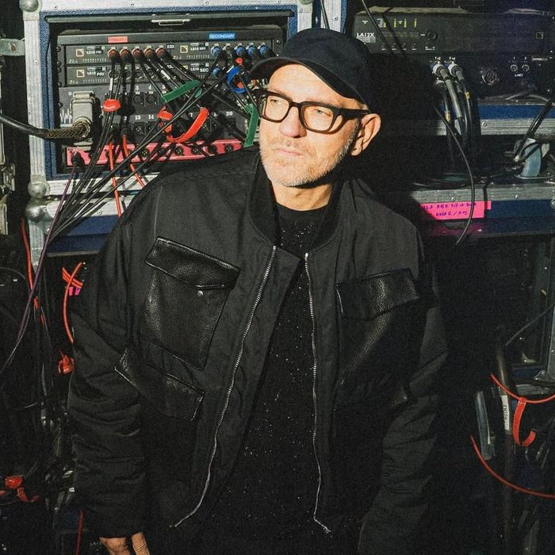
Sven Vath [Audio]: up all night
4 March 2010Steve Lawler [Audio]: Revisiting the dark drums
12 February 2010The Plump DJs [Audio]: Grand Hotel is open for business
4 February 2010Anna Lunoe [Audio]: Ministry of Sound's first lady
1 February 2010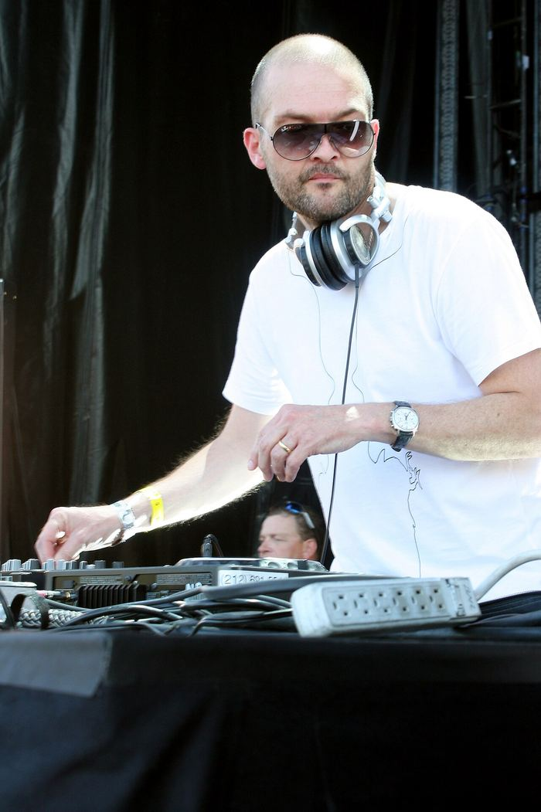
Ben Watt [Audio]: Welcoming in the New Year
22 January 2010
Grandmaster Flash [Audio]: The master returns
14 January 2010
Josh Wink [Audio]: Stronger than ever
30 December 2009
Muscles [Audio]: Cleaning up the loose ends, and ready to rock
29 December 2009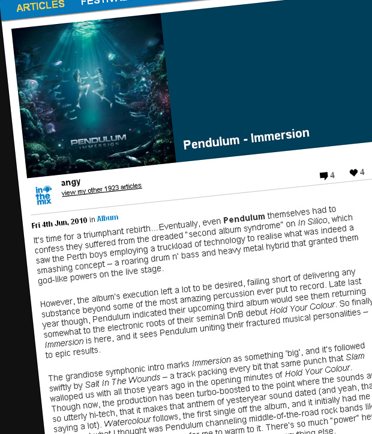
Pendulum [Audio]: The prodigal sons return
25 December 2009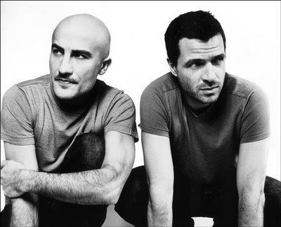
Sharam [Audio]: Wilder than ever
22 December 2009
Krafty Kuts [Audio]: Master of the rerub
16 December 2009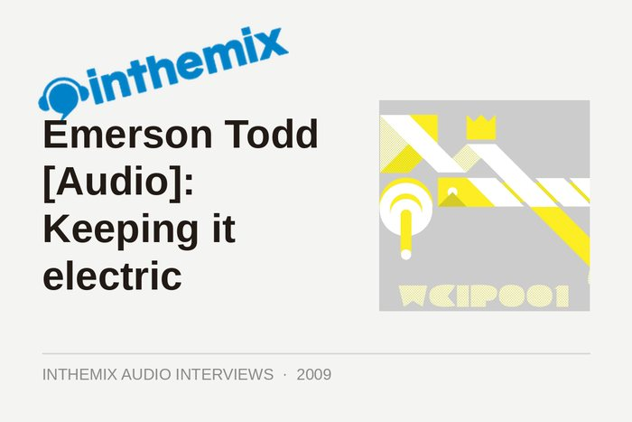
Emerson Todd [Audio]: Keeping it electric
16 December 2009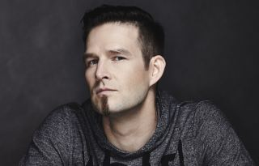
Carl Cox [Audio]: King of the Australian summer, part 2
14 December 2009Carl Cox [Audio] King of the Australian summer, part 1
2 December 2009John Dahlback [Audio]: House bound and proud
20 November 2009
Stanton Warriors [Audio]: Bringing back their Good Vibrations
18 November 2009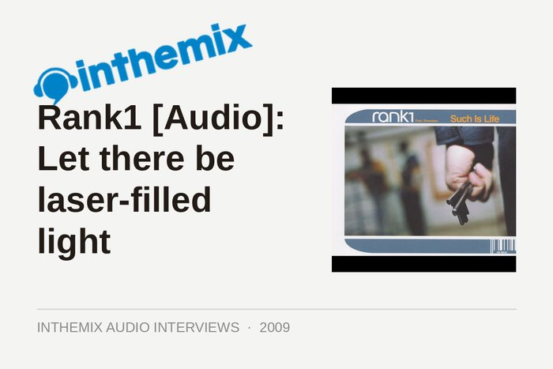
Rank1 [Audio]: Let there be laser-filled light
5 November 2009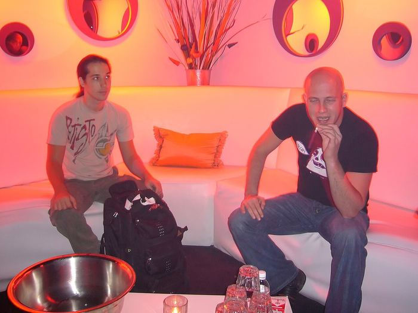
Infected Mushroom [Audio]: Technologically advanced
7 October 2009
Dubfire [Audio]: Embraced by the Cocoon
2 October 2009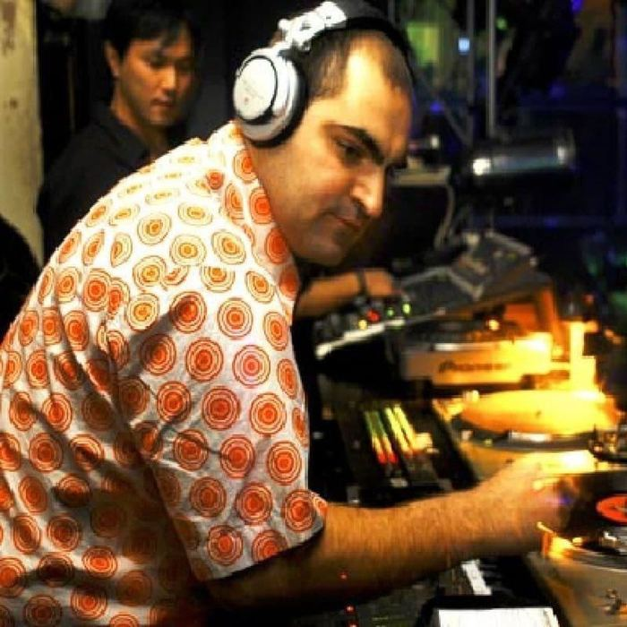
Anthony Pappa [Audio]: Still making those moments
28 September 2009
Claude VonStroke [Audio]: Parklife's dirtiest bird
23 September 2009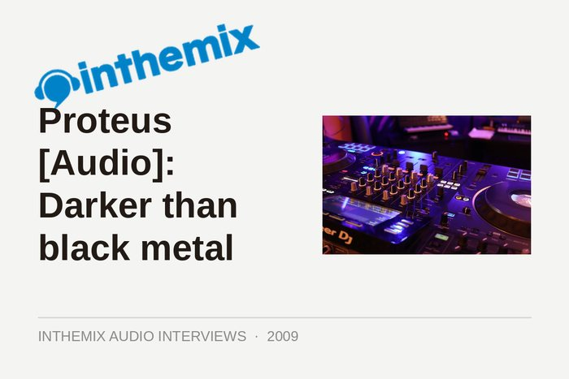
Proteus [Audio]: Darker than black metal
8 September 2009
Ferry Corsten [Audio]: A blue moon experience
2 September 2009
Above & Beyond [Audio]: Bring you the nation's finest
28 August 2009Justin Martin [Audio]: Taking us to his underground
7 August 2009Tydi [Audio]: Building a trance nation
29 July 2009
Mark Knight [Audio]: House music's united front, part 2
28 July 2009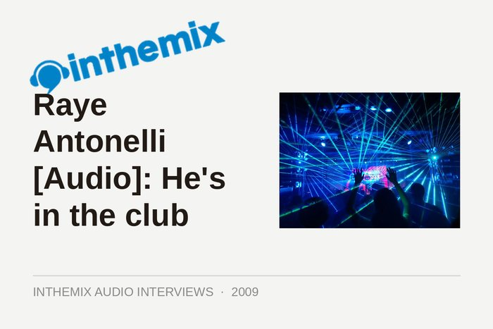
Raye Antonelli [Audio]: He's in the club
21 July 2009Mark Knight [Audio]: House music's united front, part 1
17 July 2009
Infusion [Audio]: The next step in indie-dance
1 July 2009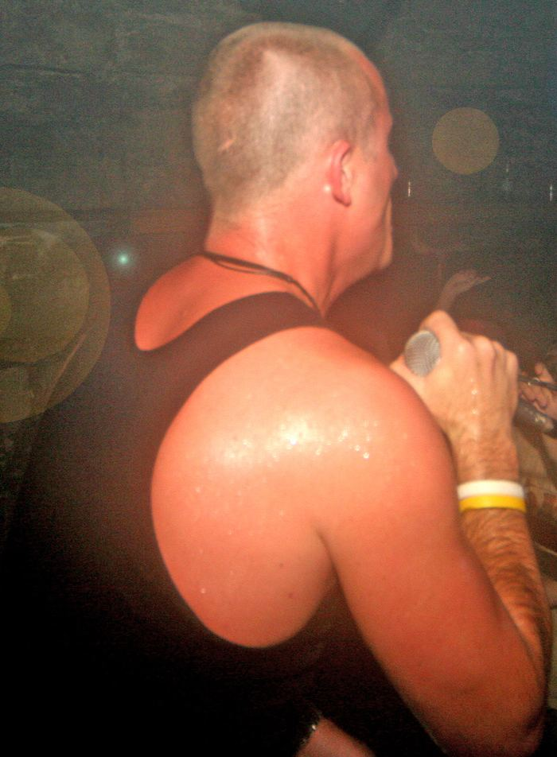
Kid Kenobi [Audio]: The return of The Kid
17 June 2009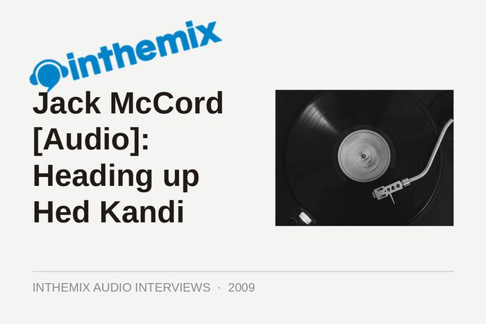
Jack McCord [Audio]: Heading up Hed Kandi
17 June 2009
James Zabiela [Audio]: He loves the Australian winter
3 June 2009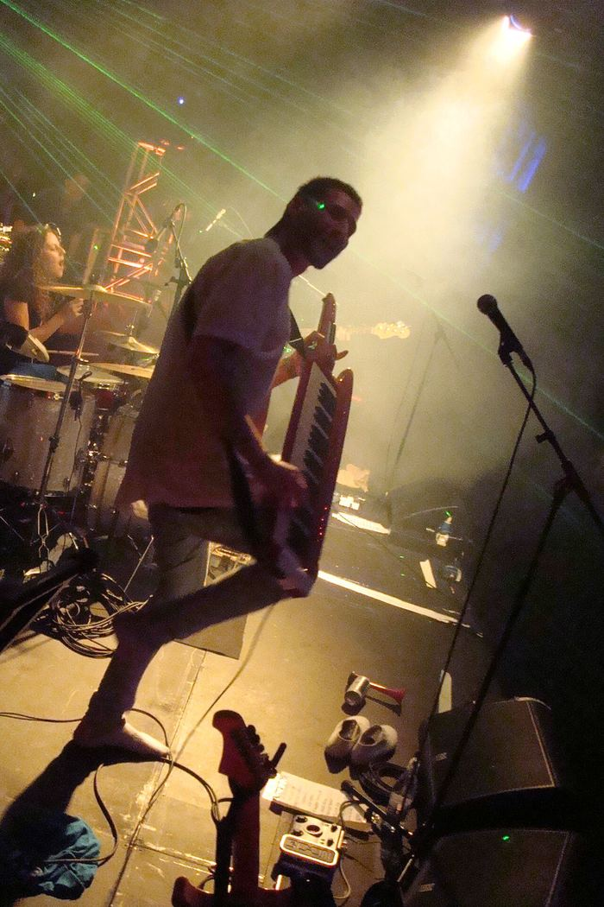
Kissy Sell Out [Audio]: He's bringing the band
30 May 2009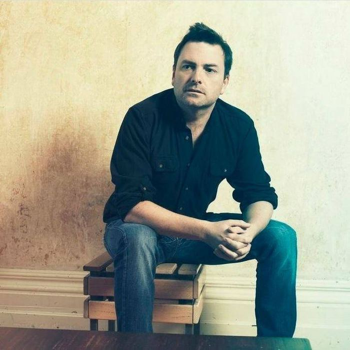
Ivan Gough [Audio]: Back to making records for the clubs
25 May 2009
Armin van Buuren [Audio]: Trance's benevolent leader
20 May 2009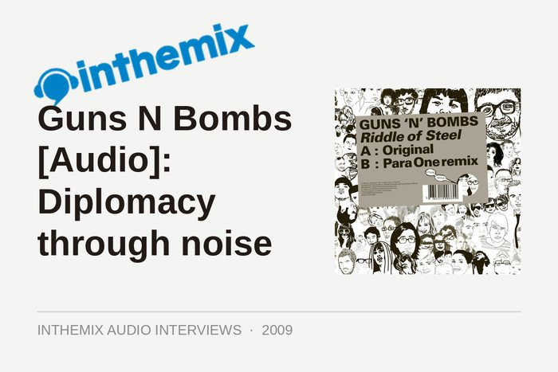
Guns N Bombs [Audio]: Diplomacy through noise
11 May 2009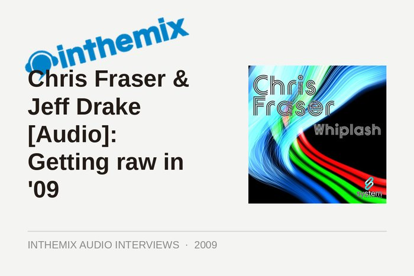
Chris Fraser & Jeff Drake [Audio]: Getting raw in '09
6 May 2009Adam K [Audio]: Progressing nicely
28 April 2009Nick Warren [Audio]: Merchant of melody
3 April 2009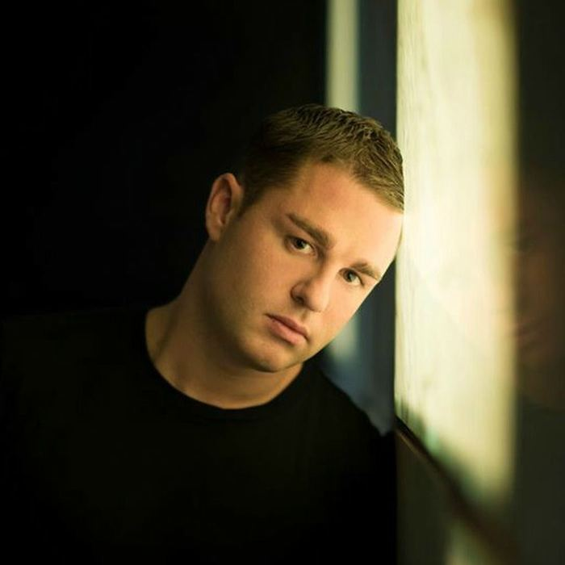
Simon Patterson [Audio]: Giving the Trance Energy smackdown
24 March 2009Mobin Master [Audio]: Giving house a new lease on life
23 March 2009
Sander van Doorn [Audio]: Keeping trance moving in '09
18 March 2009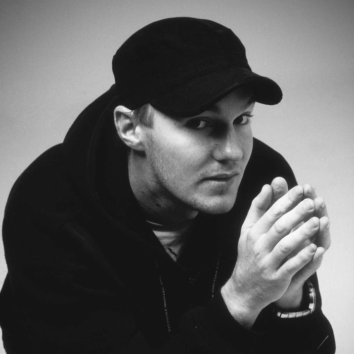
Drapht [Audio]: Taking the nation, one show at a time
4 March 2009
Mark James [Audio]: Talkin' bout Future Music Festival
25 February 2009Stanton Warriors [Audio]: They're bringing breakbeat back, Part 2
16 February 2009Stanton Warriors [Audio]: They're bringing breakbeat back, Part 1
6 February 2009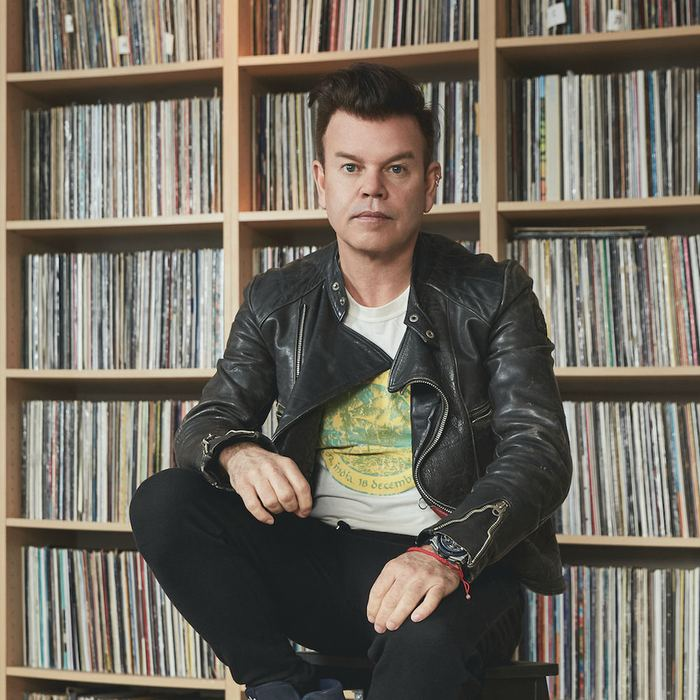
Paul Oakenfold [Audio]: Coming to you direct from Vegas, baby
30 January 2009The Aston Shuffle [Audio]: Guiding us into 2009
23 January 2009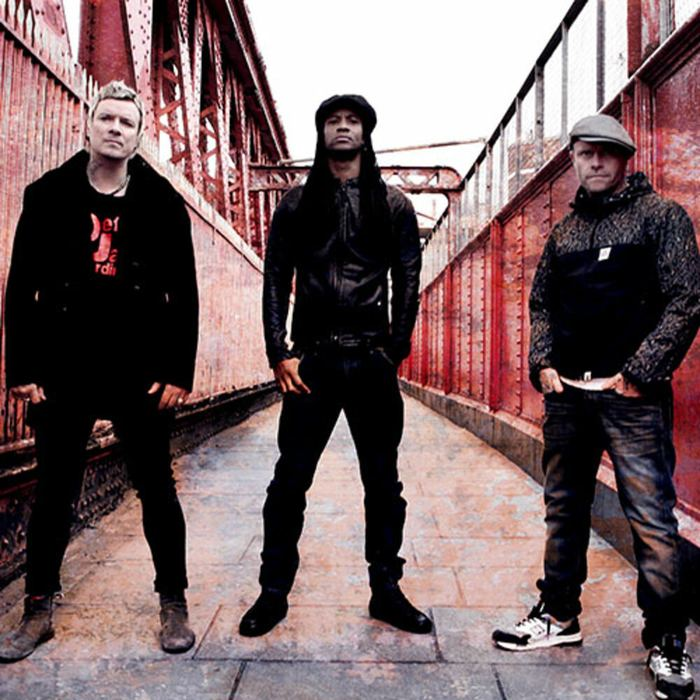
The Prodigy [Audio]: Ready for battle
14 January 2009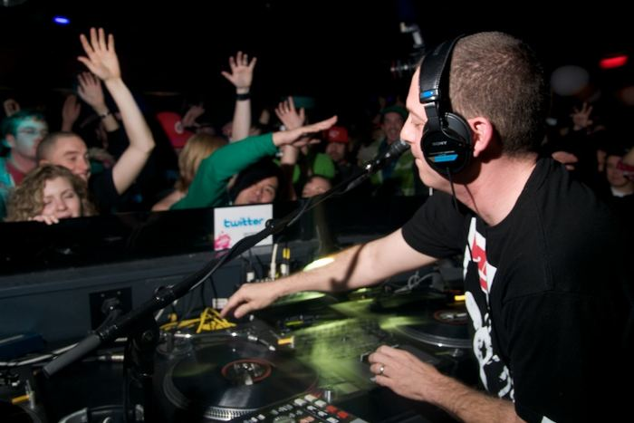
Z-Trip [Audio]: The original mash-up master
13 January 2009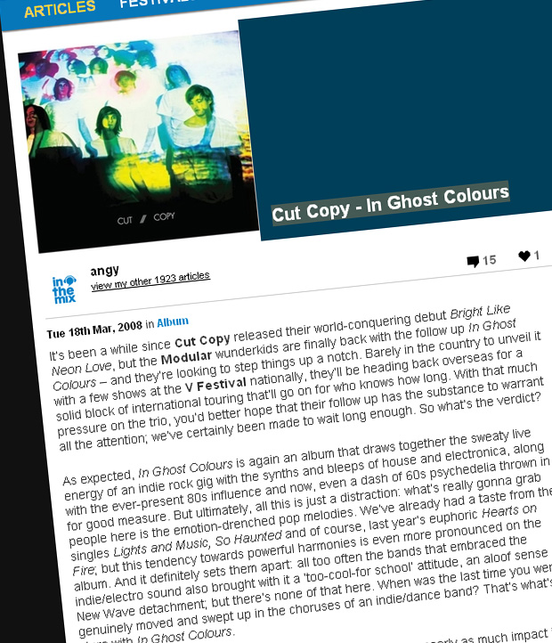
Cut Copy [Audio]: Coming home for the summer
12 January 2009
Eric Prydz [Audio]: Delaying the dream
9 January 2009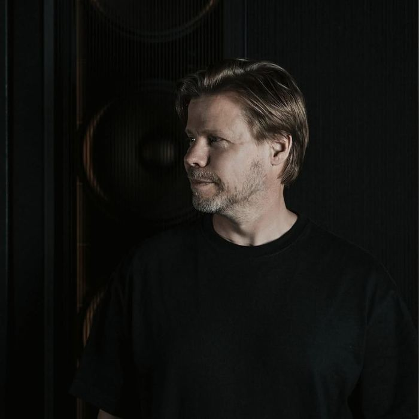
Ferry Corsten [Audio]: Full on force of nature, Part 2
2 January 2009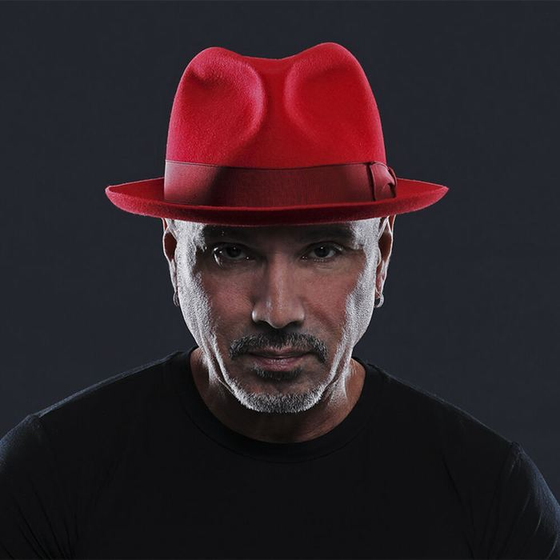
David Morales [Audio]: Not just a robot!
31 December 2008Eric Prydz [Audio]: The leviathan lands, part 1
24 December 2008Fedde Le Grand [Audio]: A new Sensation
19 December 2008Adam Freeland [Audio]: Winning the battle
18 December 2008
Ferry Corsten [Audio]: Full on force of nature, Part 1
15 December 2008
Erick Morillo [Audio]: New Years Eve party animal
12 December 2008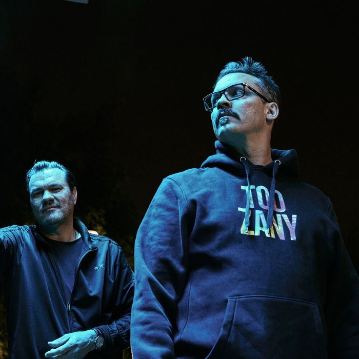
Atmosphere [Audio]: More optimistic than ever
2 December 2008DJ Sneak [Audio]: Bringing Berlin home to Chicago
4 November 2008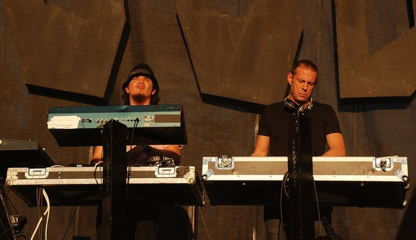
Thievery Corporation [Audio]: Retaliating through the radio waves
3 November 2008Carl Cox [Audio]: Owning it in '08
29 October 2008
Above & Beyond [Audio]: Anjunabeats brilliance
22 October 2008
Alan Braxe [Audio]: Delivering the French touch
17 October 2008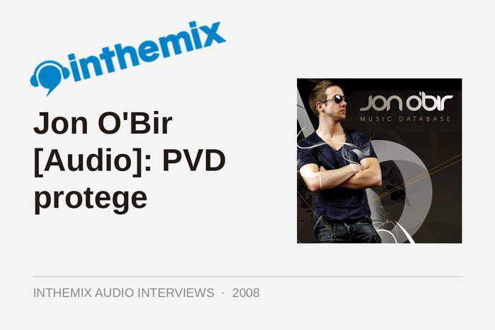
Jon O'Bir [Audio]: PVD protege
30 September 2008TV Rock [Audio]: Coming at you from the underground (Part 2)
10 September 2008
Sander van Doorn [Audio]: Nu-trance's greatest ambassador, Part 2
1 September 2008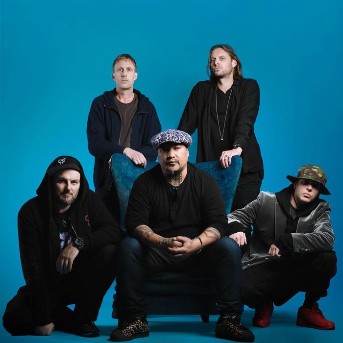
Shapeshifter [Audio]: Finished symphony
28 August 2008
TV Rock [Audio]: Coming at you from the underground - Part 1
20 August 2008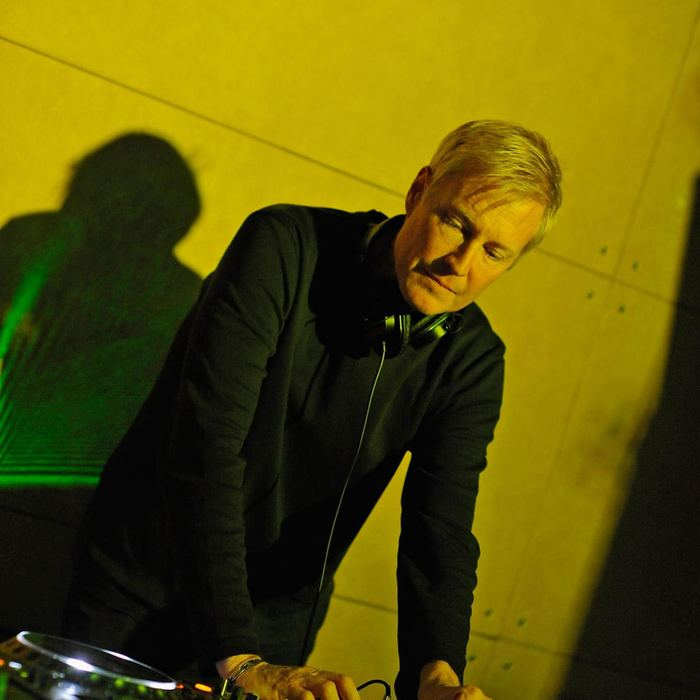
Christopher Lawrence [Audio]: To infinity & beyond
19 August 2008Steve Porter [Audio]: House at 100 miles an hour
18 August 2008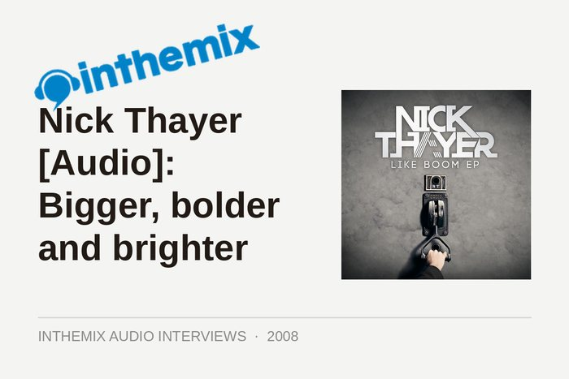
Nick Thayer [Audio]: Bigger, bolder and brighter
18 August 2008Sander van Doorn [Audio]: Nu-trance’s greatest ambassador
15 August 2008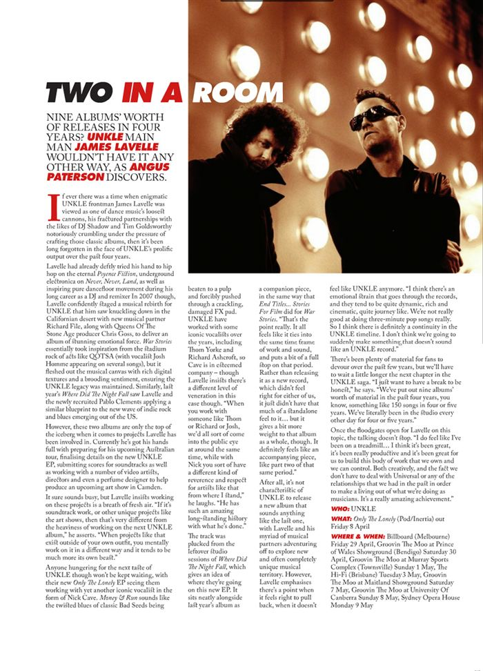
UNKLE [Audio]: Telling stories for moving pictures
14 August 2008Sophie Sugar [Audio]: Sugary melodies of the highest calibre
12 August 2008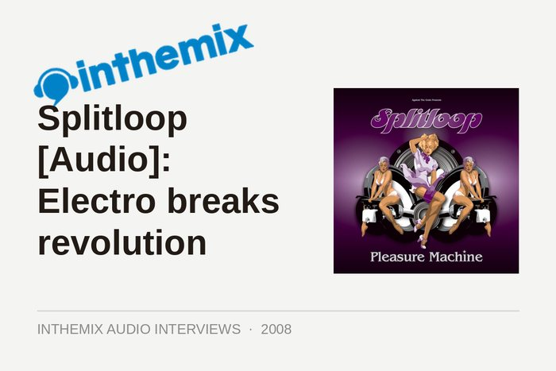
Splitloop [Audio]: Electro breaks revolution
31 July 2008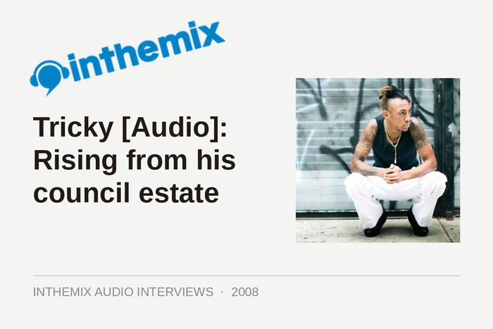
Tricky [Audio]: Rising from his council estate
16 July 2008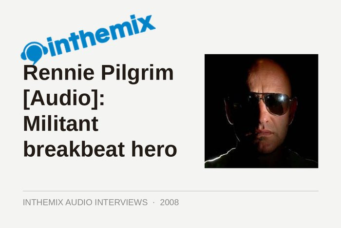
Rennie Pilgrim [Audio]: Militant breakbeat hero
15 July 2008Busy P [Audio]: Amping up the feedback, Part 2
10 July 2008
Infusion [Audio]: A new live Experience
9 July 2008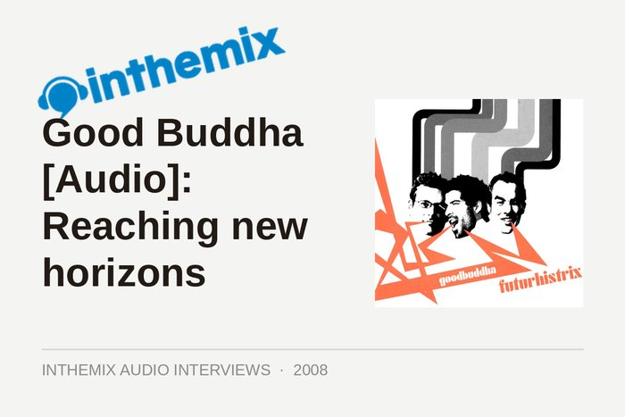
Good Buddha [Audio]: Reaching new horizons
9 July 2008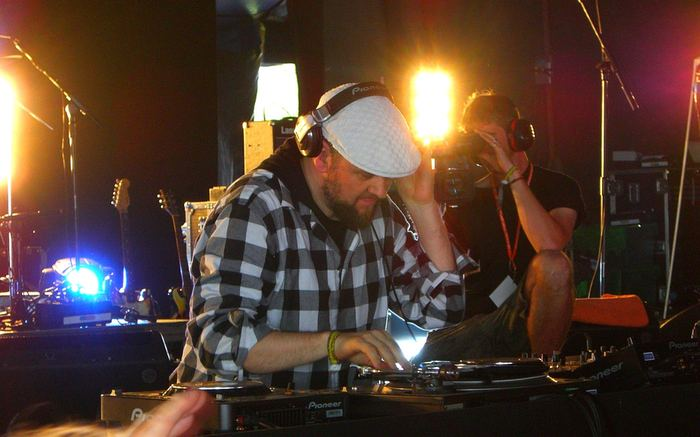
Tom Middleton [Audio]: Restoring the Jedi Order
8 July 2008Thomas Gold [Audio]: A dash of trance in his electro house
8 July 2008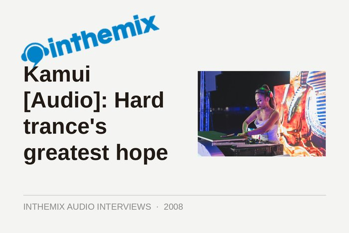
Kamui [Audio]: Hard trance's greatest hope
23 June 2008Morgan Page [Audio]: Walking down his longest road
17 June 2008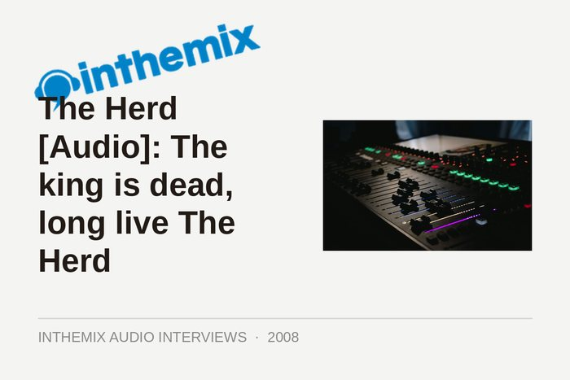
The Herd [Audio]: The king is dead, long live The Herd
12 June 2008
Armin van Buuren [Audio]: The one and only, Part 2
6 June 2008
Steve Lawler [Audio]: Driving it down a darker path
4 June 2008
Dubfire [Audio]: Seduced by the power of the dark side
30 May 2008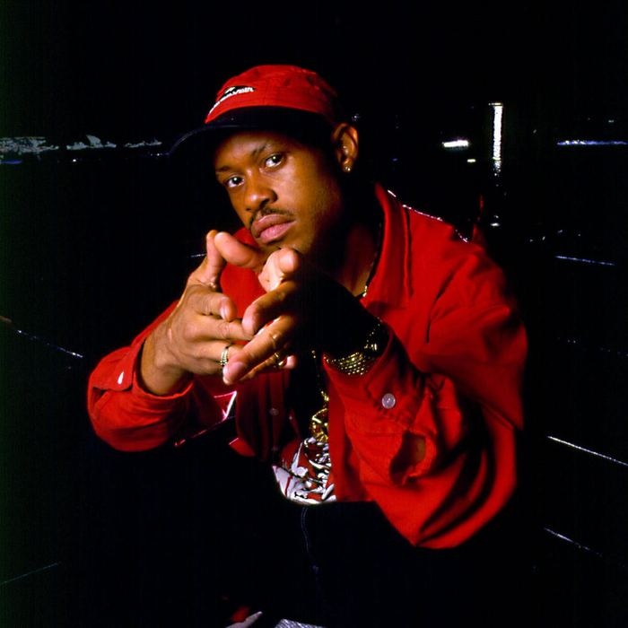
Guru [Audio]: Reinventing the mixtape, Jazzmatazz style
26 May 2008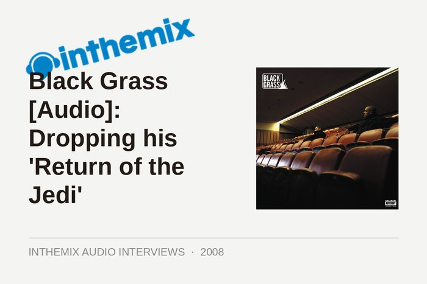
Black Grass [Audio]: Dropping his 'Return of the Jedi'
23 May 2008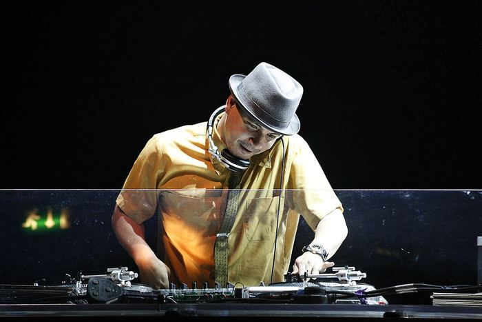
Mix Master Mike [Audio]: Droppin' science at We Love Sounds
21 May 2008Mark Farina [Audio]: Exploring his techier side
6 May 2008The Whip [Audio]: Crackin' it at We Love Sounds
30 April 2008Tiesto [Audio]: Discovering the Elements
18 April 2008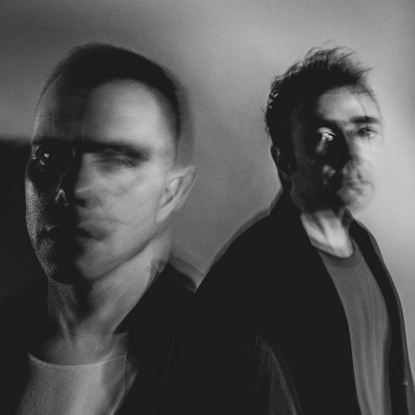
The Presets [Audio]: Battening down for the Apocalypso
15 April 2008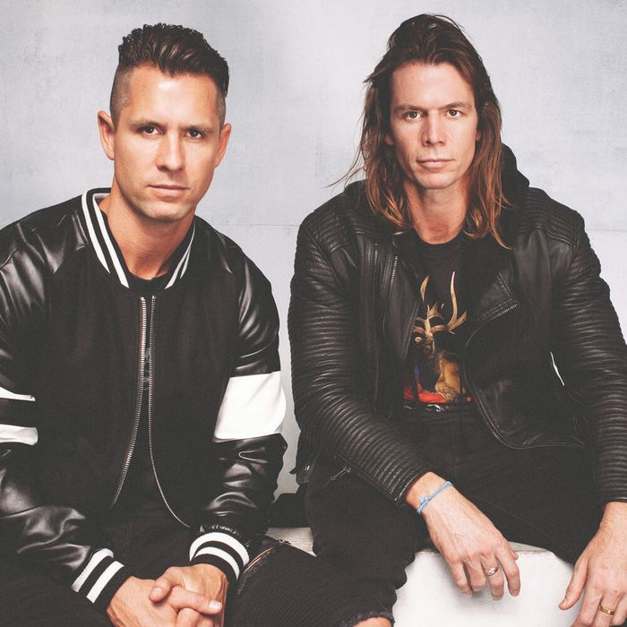
The Stafford Brothers [Audio]: Kicking it Queensland style
8 April 2008Pendulum [Audio]: Ready to rock
2 April 2008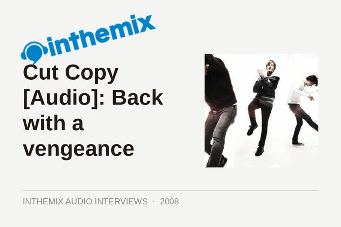
Cut Copy [Audio]: Back with a vengeance
27 March 2008Matt Nugent [Audio]: Finding his onelove
19 March 2008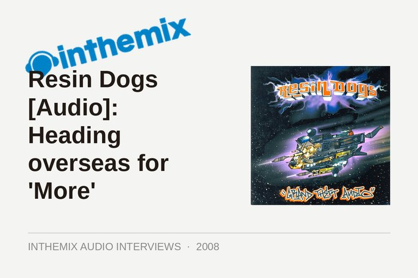
Resin Dogs [Audio]: Heading overseas for 'More'
12 March 2008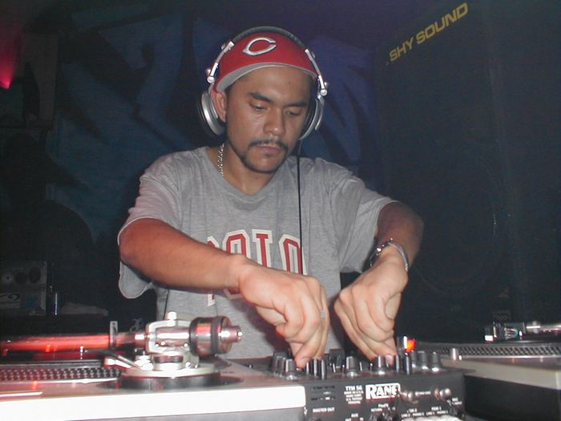
DJ Craze [Audio]: Expect the unexpected
10 March 2008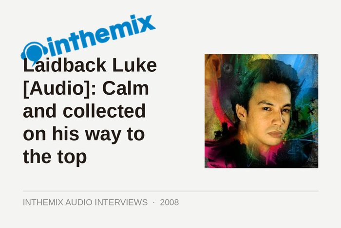
Laidback Luke [Audio]: Calm and collected on his way to the top
6 March 2008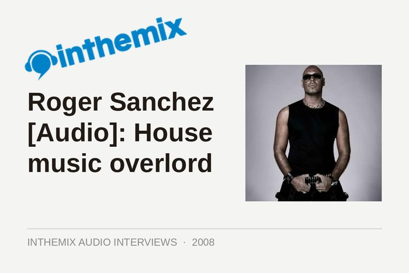
Roger Sanchez [Audio]: House music overlord
5 March 2008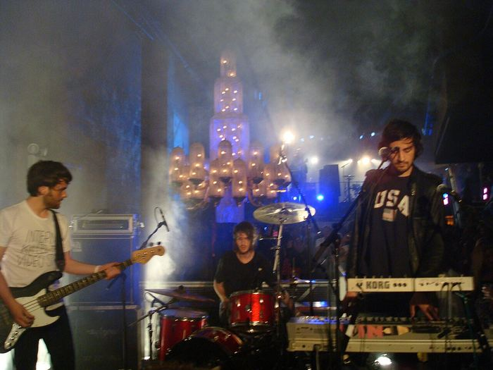
Midnight Juggernauts [Audio]: They're international
4 March 2008Markus Schulz [Audio]: Getting cosy with trance
19 February 2008Hook N Sling [Audio]: Hooking up with the Ministry
12 February 2008DJs Are Not Rockstars [Audio]: New York City electro stylin’
6 February 2008James Zabiela [Audio]: Human after all
25 January 2008Jon Rundell [Audio]: Offsider to the Cox
18 January 200816 Bit Lolitas [Audio]: 128 Bit brilliance
17 January 2008Axwell [Audio]: Kickstarting the 90s revival
14 January 2008Krafty Kuts [Audio]: Breaks renaissance starts here
4 January 2008United States of Electronica [Audio]: Americans can do indie/electro too
3 January 2008
Tommie Sunshine [Audio]: In the land of everlasting brightness
28 December 2007Tom Neville [Audio]: Breaking the electro house blueprint
28 December 2007